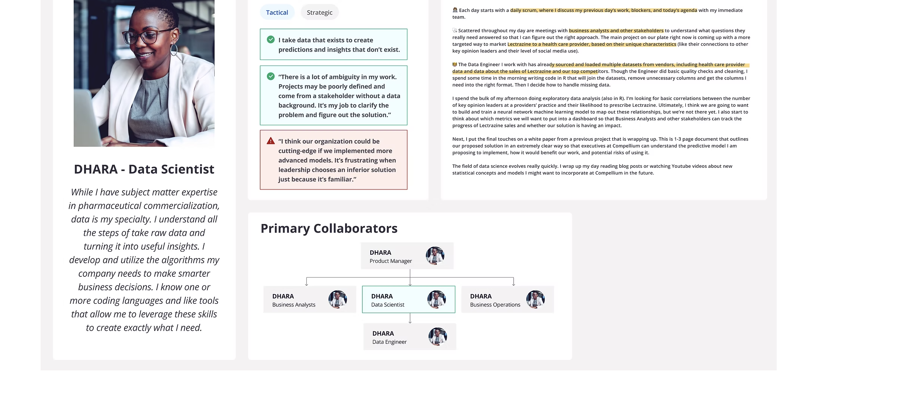
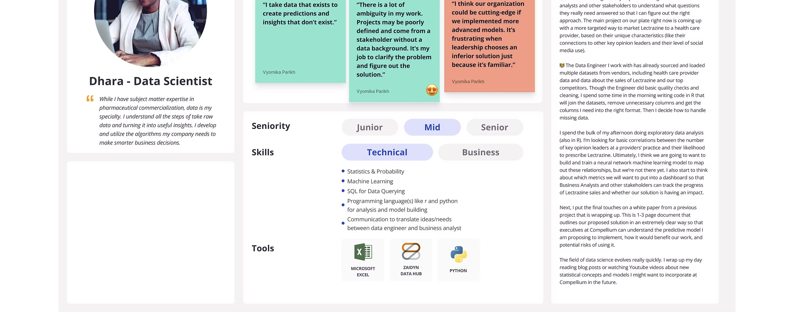
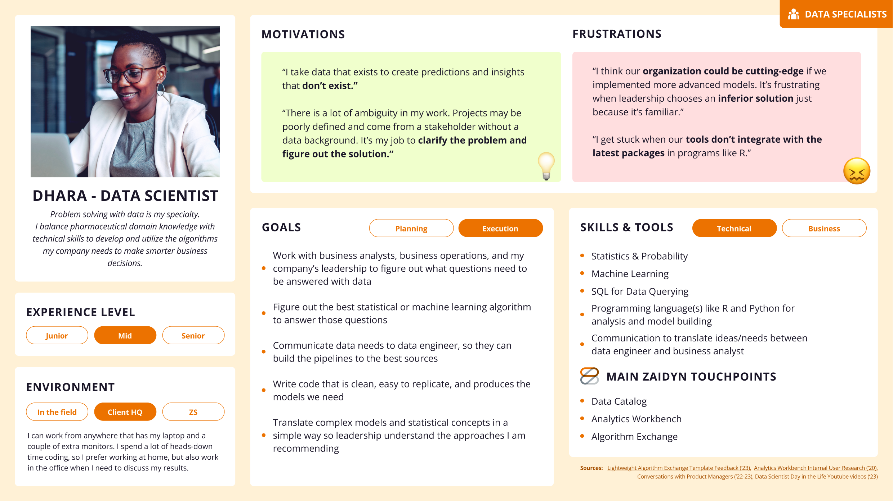
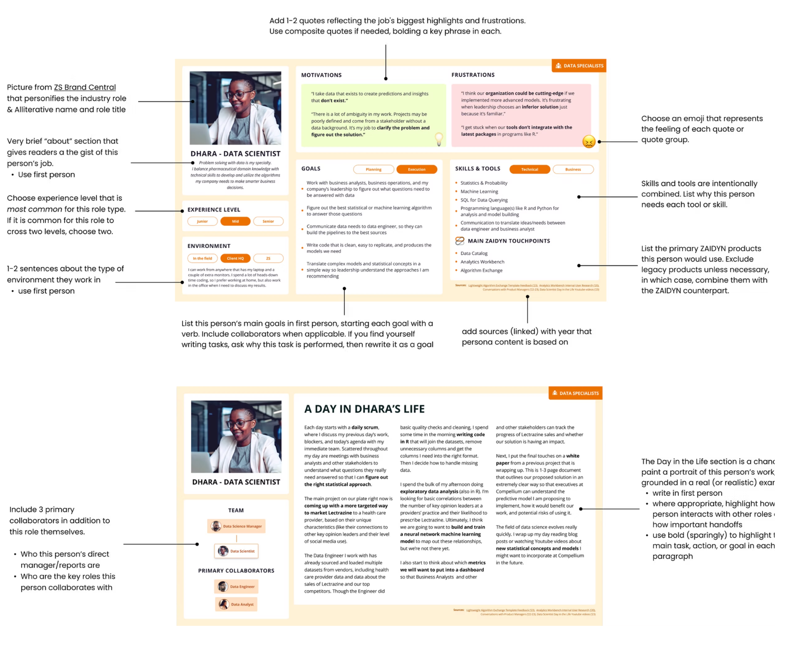
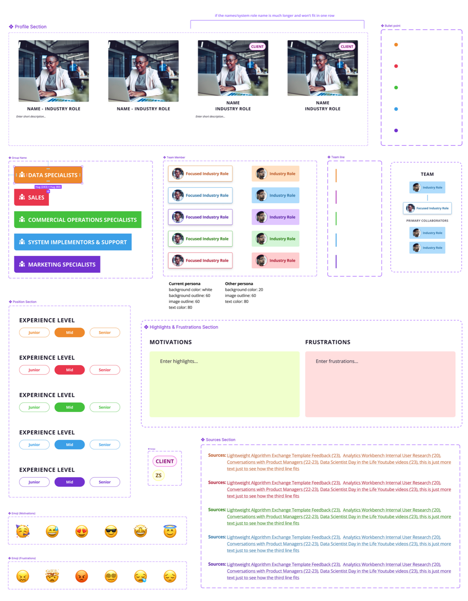
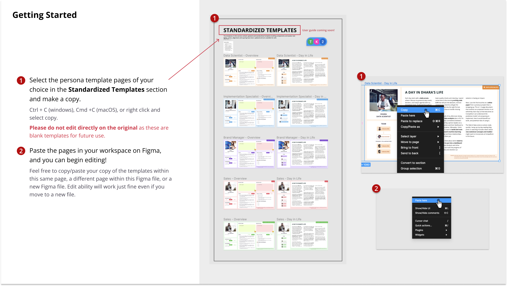
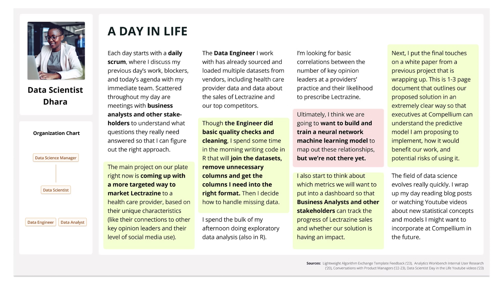
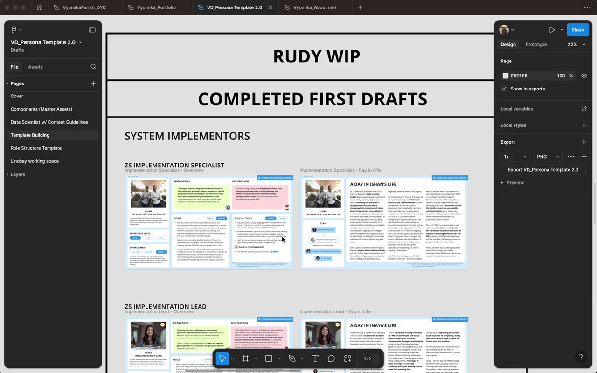

Design System
Figma
Documentation
ZS Persona — Design system for user-centric product development
Five product teams. Thirty user types. Zero shared format. I built a persona design system that gave ZS a single language for their users, enabling 80+ personas to be created in a single day.
The problem
A platform serving 30+ user types with no shared language
ZAIDYN was a multi-product platform serving a complex ecosystem across pharma sales. But the teams building it (researchers, designers, engineers) each carried their own definition of who the users were. Every new feature shipped with a slightly different user in mind, and the misalignment compounded with every sprint.
There was no standard format, no reusable artifact, and no single source of truth. Persona creation was ad hoc, siloed, and couldn't scale.
The state before this project
30+
User types that needed representing across ZAIDYN, each defined differently by a different team.
5+
Teams building for users they couldn't agree on, with no shared definition or format.
0
Shared templates. Every persona built from scratch, by different people, with different outputs.
The design question
"How might we deepen empathy in our design process to enable seamless integration and customization as we expand to new user groups?"
Design principles
Four principles that shaped every decision
Empathy-Driven
Design with deep user understanding and emotional connection. Personas should feel like real people, not data summaries.
Scalable & Flexible
Adaptable templates that work for 2 personas or 200, scaling to new user groups without breaking down.
Data-Informed
Let research data guide structure while balancing creative storytelling, grounded in facts and readable at a glance.
Inclusive & Simple
Prioritize accessibility and simplicity: non-Figma users should be able to open and edit layouts without special expertise.
The approach
Not a data table. A person.
Working from filtered research data with two user researchers, the goal wasn't to organize information. It was to create artifacts teams would actually use. Most persona systems fail because they read like spreadsheets. We designed around five elements that shift a persona from a profile to a person: a name you remember, a quote in their voice, a story that grounds their context, a day-in-life that makes their work visible, and an org chart that shows how they connect to everyone around them.
The constraint that shaped everything: the system had to work for non-Figma users. Researchers, PMs, and stakeholders needed to open and edit it without prior Figma experience. That meant every component had to be self-explanatory: no hidden layers, no complex auto-layout, no assumptions.
Name & title
Defining quote
Personal story
Day in life
Org chart
Design evolution
Three versions. One right answer.
Each version went through structured feedback sessions with researchers and visual designers. Every round surfaced something the previous version got wrong; the feedback below drove the next iteration.
v1.0 · Foundation
Basic information hierarchy, single quote per persona, skills and tools in separate sections. A starting point, but too thin on context and too rigid to scale.

Researcher feedback that drove v1.5
Add daily routines and multiple quotes to capture how users think and feel across different moments
Visually link personas using icons or a mini org chart so relationships between roles are clear
Combine skills and tools sections to show how each persona uses them in context, not as separate lists
v1.5 · Refined
Richer context, org chart introduced, skills integrated into the day-in-life narrative. But the layout still assumed Figma expertise and wouldn't hold up across 30+ personas at once.

Designer feedback that drove v2.0
Scale down visuals for better consistency and readability across 30+ personas in a single view
Shift to text-focused layout with pull-quotes: less decoration, more signal
Make the layout fully editable without prior Figma experience: anyone on the team should be able to open and update it
Rethink structure to accommodate personas with varying content levels without breaking the grid
v2.0 · Shipped
The version that scaled. Clean text hierarchy, org chart embedded in the Day in Life section, persona group tags for navigation, and 20px body text for readability at 1920×1080. Editable by anyone.

Final refinements applied
Persona group tag added to the right side for quick visual identification across the full library
Org chart moved into the Day in Life section: wider, justified text, indents removed
Standardized Name label format: first name, then title (e.g. Dhara, Data Scientist)
Highlights and frustrations consolidated to 2 long boxes; skills, tools, and goals boxes standardized in size
Body text reduced to 20px across all sections for readability at presentation scale
Content guidelines
Write so a new ZSer or someone unfamiliar with pharma can understand it without a briefing. Spell out acronyms. Write goals and actions in plain language, not system jargon.

What shipped
A master file that anyone could open and use
Two deliverables came out of the final design sprint: a scalable Figma component library and a step-by-step annotation guide. Together they let any designer or researcher across the company pick up a persona, customize it, and ship it without a handoff meeting.
Generating Editable Master Components
Versatile, editable components that streamline the research process and ensure consistency across projects. A single Figma source of truth optimized for 1920×1080 so it works across web and presentation formats without reformatting.
01
Standardized template library
One master file with fully editable persona cards for all 30+ user types, built from shared components so every persona stays visually consistent regardless of who edits it.
02
Day in Life org charts
Embedded relationship maps within each persona showing how users connect to each other, giving teams immediate context on collaboration patterns and decision flows.
03
Persona group tags
Right-side tagging system for quick visual identification across 30+ personas, enabling teams to sort, filter, and navigate the full library at a glance.

Component anatomy: every building block of the persona system, with named sections and configurable variants

Standardized templates page in Figma: select, copy, and start editing immediately

Day in Life section embedded inside each persona, showing role relationships and collaboration patterns
User Guide with Annotation
A comprehensive step-by-step guide with detailed annotations, written so a new ZSer or someone unfamiliar with pharma could pick up and use the system without a briefing.
1
Select the persona template pages of your choice in the Standardized Templates section and make a copy. Do not edit the original — it stays as the blank template for future use.
2
Paste the pages in your workspace on Figma. The copy works in the same file, a different page, or a new Figma file entirely.
3
Edit directly. All text, images, and components are unlocked. No prior Figma experience needed.

Master file in use: multiple persona drafts across user groups, all built from the same components
Impact
80 personas. One day.
The system eliminated the bottleneck of one-at-a-time persona creation, enabling the entire design and research organization to collaborate on a shared library at a scale that wasn't possible before.
80+
User personas created company-wide in a single day, enabling more personalized and impactful product design
15
Non-designers guided through the system, directly enhancing design thinking across research and product teams
22
Editable components in the master file, streamlining workflow with fully customizable, reusable elements
10%
Project timeline saved by merging persona design with component architecture from a fellow designer
Reflections
What this project taught me
Collaborating with lead user researchers and a visual designer clarified the persona design process and showed how a well-structured system can scale empathy across an entire company, not just a single team.
Structured feedback calls with researchers after each version were the single biggest driver of design quality. Getting specific critique on real artifacts beats any amount of solo iteration.
Optimizing for 1920×1080 from the start meant the file worked equally well in Figma, on the web, and in executive presentations without any reformatting overhead.
Merging persona design with component architecture from a fellow designer let me fulfill requirements faster and saved 10% of the project timeline. Cross-disciplinary learning inside a sprint has real ROI.